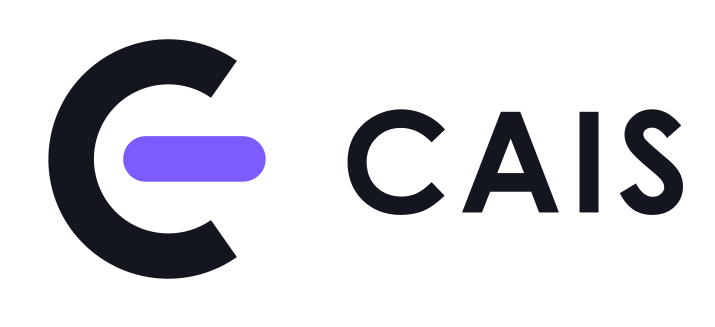

Transparência
Progresso e resultados visíveis para empresas e profissionais.

SOBRE O CAIS
O CAIS aproxima empresas e profissionais, cuidando de toda a jornada: da primeira trilha de formação até a entrega final do projeto.
NOSSO PROPÓSITO
Formar profissionais e encontrar projetos costuma acontecer em lugares separados. O CAIS junta tudo em um só sistema, para que ninguém perca o fio da meada.
Empresas enxergam quem está pronto para atuar. Profissionais enxergam o próprio progresso e as oportunidades que vêm depois dele.
A JORNADA
Trilhas de conteúdo com etapas, quizzes e acompanhamento de cada avanço.
Com a formação concluída, o profissional é alocado em projetos de empresas parceiras.
Tarefas, prazos e resultados acompanhados em dashboards claros para todos.
NOSSOS VALORES
Progresso e resultados visíveis para empresas e profissionais.
Aprendizado contínuo, ligado à prática real de projetos.
Pessoas, empresas e projetos trabalhando no mesmo ritmo.
Tudo em um só lugar, sem planilhas espalhadas e sem ruído.
Conheça o CAIS e comece sua jornada.